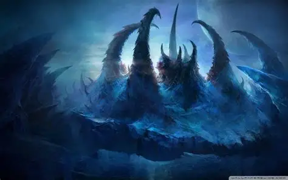
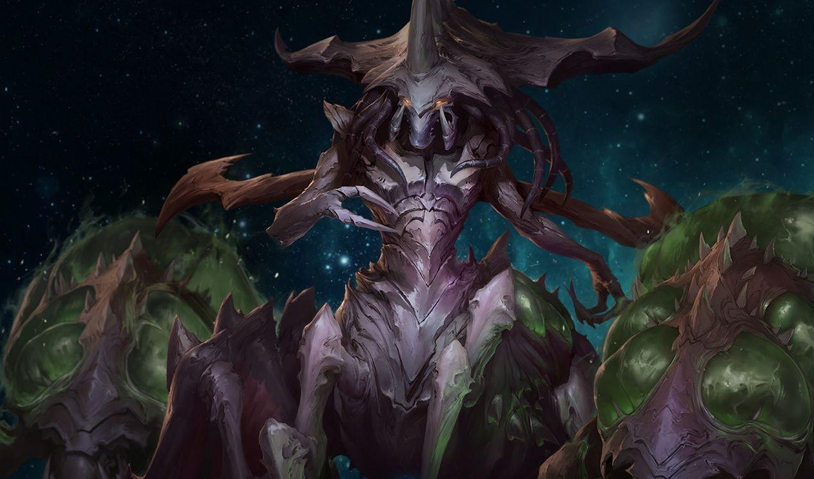
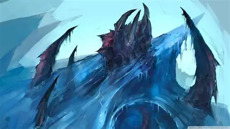
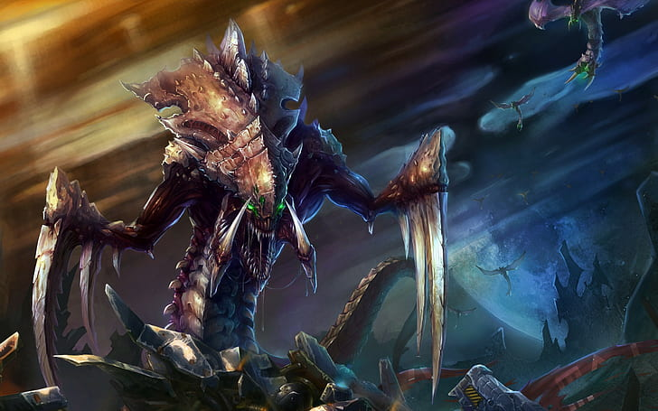
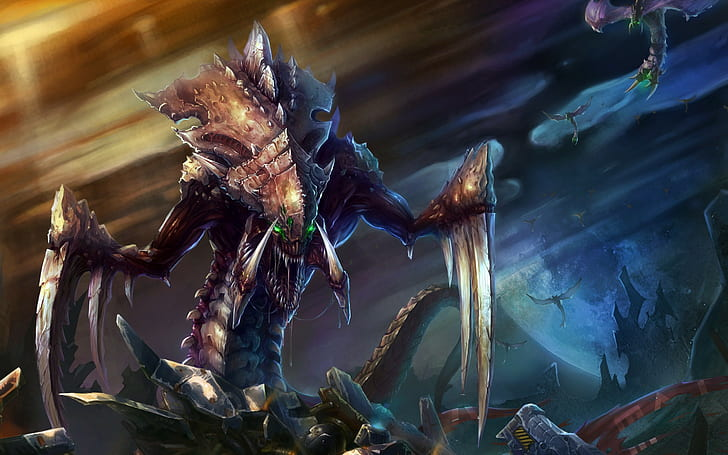
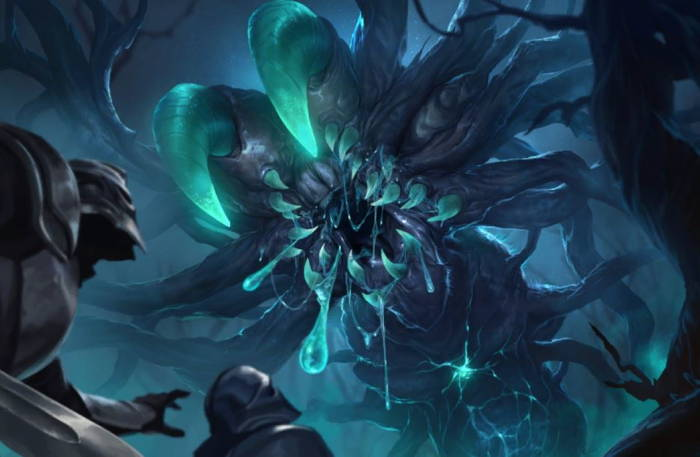
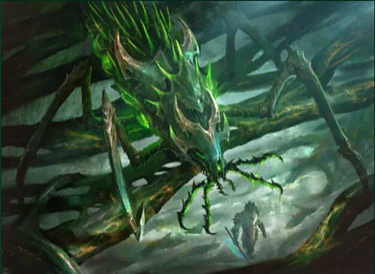
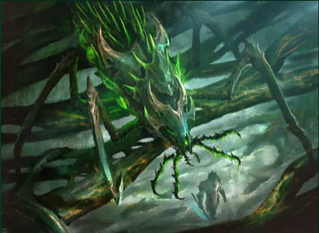
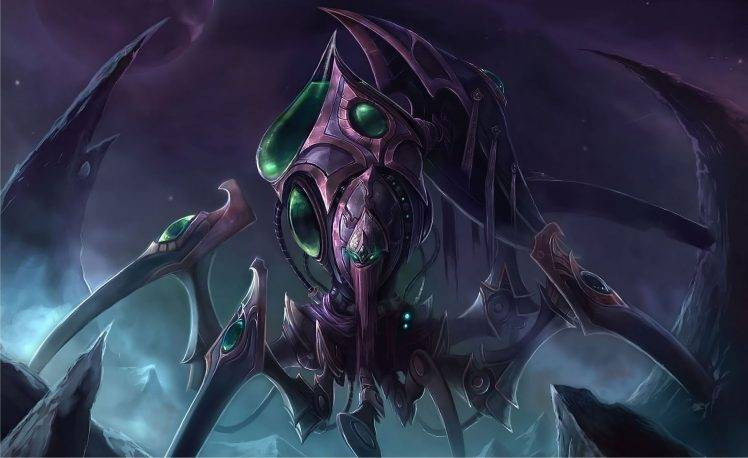

Simbiosis
В такой враждебной среде, как Марс, симбиоз искусственных и биологических форм жизни стал ключом к созданию устойчивых экосистем. Генетически модифицированные бактерии работают вместе с наноботами, производя кислород, фильтруя загрязняющие вещества и создавая биосовместимые структуры. Это сотрудничество позволило создать самодостаточные человеческие колонии, ознаменовав собой «до» и «после» в терраформировании красной планеты.
такой
с годами они смогли научиться, вырасти, а рождение королевы стало достаточной причиной
-
 

Зерглинг
В такой враждебной среде, как Марс, симбиоз искусственных и биологических форм жизни стал ключом к созданию устойчивых экосистем. Генетически модифицированные бактерии.
-

 

Гидралиск
В такой враждебной среде, как Марс, симбиоз искусственных и биологических форм жизни стал ключом к созданию устойчивых экосистем. Генетически модифицированные бактерии.
-

 

Эволюция
В такой враждебной среде, как Марс, симбиоз искусственных и биологических форм жизни стал ключом к созданию устойчивых экосистем. Генетически модифицированные бактерии.
Несмотря на все это, люди ошибались, думая, что органическая жизнь не будет развиваться леденящим душу образом. с годами они смогли научиться, вырасти, а рождение королевы стало достаточной причиной, чтобы достичь уровня нечеловеческой колонии. Среди них зародился хаос, чтобы напасть на человеческие колонии, и они рассмотрели новую расу, родившуюся на Марсе, - они не думают, они только едят и нападают. Полностью враждебная раса, которая не стремится ни к чему, кроме как к расширению...
-

с годами они смогли научиться, вырасти, а рождение королевы стало достаточной причиной, чтобы достичь уровня нечеловеческой колонии.
-

Среди них зародился хаос, чтобы напасть на человеческие колонии, и они рассмотрели новую расу, родившуюся на Марсе, - они не думают, они только едят и нападают.
-

В такой враждебной среде, как Марс, симбиоз искусственных и биологических форм жизни стал ключом к созданию устойчивых экосистем.